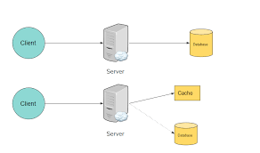

Post.
The Next.js 15 Release Candidate (RC) has officially been made available, providing developers with the opportunity The Next.js 15 Release Candidate (RC) has officially been made available, providing developers with the opportunity to test new features ahead of the stable release. This early version brings a host of updates and experimental features aimed at improving the performance, flexibility, and development experience of Next.js applications.
Key Features:
React 19 RC Support.
Key Features in Next.js 15 RC: React 19 RC Support Next.js 15 introduces support for the React 19 Release Candidate, including enhancements for handling hydration errors and experimental integration with the React Compiler. These updates aim to streamline component rendering and error management, aligning Next.js closely with the upcoming React 19 version
Caching Improvements.
One of the key changes in Next.js 15 is the adjustment of caching behavior. By default, fetch requests, GET Route Handlers, and client-side navigations will no longer be cached. This shift gives developers more control over caching strategies, ensuring that applications can dynamically fetch fresh data without relying on stale cache by default.
Partial Prerendering.
A new experimental feature, Partial Prerendering, has been introduced with a Layout and Page configuration option. This allows developers to incrementally adopt prerendering for specific parts of a page, offering an optimized mix of static and dynamic rendering. This approach can significantly improve performance for applications with complex or frequently changing content.
Next/after API.
The new next/after API enables developers to execute code after a response has finished streaming to the client. This feature is designed to handle tasks that don’t block user interaction, such as background processing, logging, or analytics. It offers a more efficient way to manage server-side processes that don’t need to impact the user experience.
Updated create-next-app.
The create-next-app CLI has been refreshed with a modernized design. Additionally, a new flag has been introduced to enable Turbopack during local development. Turbopack is designed to significantly speed up the build process, improving the developer experience by reducing waiting times for code changes to take effect.
Bundling External Packages
Next.js 15 also provides new configuration options for bundling external packages within both the App Router and Pages Router. This stable feature allows for greater flexibility in how dependencies are packaged, potentially optimizing build sizes and improving application performance.
These new features in the Next.js 15 RC highlight a strong focus on performance optimization, better error handling, and more control over build processes, positioning it as a powerful tool for modern web development. Developers can now begin testing these updates and prepare for the official stable release.
Caching Updates in Next.js 15
Next.js introduced the App Router, it came with opinionated caching defaults aimed at maximizing performance, with flexibility for developers to opt out when necessary. After gathering feedback from the community, the caching approach has been re-evaluated to better align with use cases like Partial Prerendering (PPR) and third-party libraries utilizing fetch.
These changes mark the beginning of ongoing improvements to caching in Next.js, with more updates expected in the official Next.js 15 GA announcement.
Fetch Requests Are No Longer Cached by Default.
In Next.js 15, the default caching behavior has been changed to no-store. This ensures that fetch requests are no longer cached unless explicitly configured. If caching is still desired, developers can opt-in by: fetch('https://api.example.com', { cache: 'force-cache' });
- Fetch Requests
- fetch('https://api.example.com', { cache: 'force-cache' });
- export const dynamic = 'force-static;
- export const fetchCache = 'default-cache';
- GET Route
- export const dynamic = 'force-static';
GET Route Handlers Are Now Uncached by Default.
Previously, GET Route Handlers were cached by default unless dynamic functions or configurations were used. In Next.js 15, GET requests are no longer cached by default. However, caching can still be enabled by adding a static route config option such as.
Conclusion: What to Expect from Next.js 15 and Beyond.

Next.js 15 introduces a range of cutting-edge features aimed at enhancing performance, flexibility, and developer experience. From React 19 RC support and the experimental React Compiler, to significant caching improvements and the innovative Partial Prerendering, this release empowers developers to build faster and more dynamic applications with greater control over rendering strategies.
The introduction of the after() API is another milestone, addressing a key challenge in serverless environments by enabling asynchronous post-response tasks, which streamlines operations without blocking user interactions.
These updates reflect Next.js’ ongoing commitment to performance and optimization, pushing the boundaries of modern web development. Developers are encouraged to explore these features in the Release Candidate and prepare for their integration in the stable release.